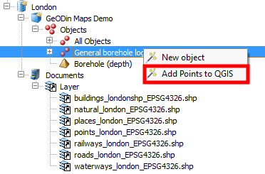
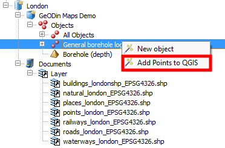

Visualisation in QGIS
In addition to the database objects the database shape files are imported to QGIS, if they were properly stored in the GeODin folder "Documents". As they are vector files they can easily added to the QGIS map canvas.
 The right click menu is called to add the proper group or file to the map. The shape file already has a geospatial reference, so no dialog is needed to choose the correct coordinate system.
In the same way all objects of a project or objects of one object type can be added to the map. Therefore the right click menu is called below the level "All Objects".

These points are stored in a temporary vector file. A dialog opens afterwards to define the proper projections of the vector file.
Note: Cancelling the dialog for the selection of a coordinate system will use the default coordinate system for spatial reference (usually WGS84). This is an internal function of QGIS and can be changed in the QGIS settings. Cancelling this process does not mean that adding the points to map is interrupted.
If objects were added to map canvas and changes have been made to the database, this changes can be synchronised with the vector file in QGIS. To do so the "refresh" button in the upper toolbar is used. This will read changes in the database and transfer them to the vector file. If the vector file was changed independently from the database, any changes will be lost.
The right click menu is called to add the proper group or file to the map. The shape file already has a geospatial reference, so no dialog is needed to choose the correct coordinate system.
In the same way all objects of a project or objects of one object type can be added to the map. Therefore the right click menu is called below the level "All Objects".

These points are stored in a temporary vector file. A dialog opens afterwards to define the proper projections of the vector file.
Note: Cancelling the dialog for the selection of a coordinate system will use the default coordinate system for spatial reference (usually WGS84). This is an internal function of QGIS and can be changed in the QGIS settings. Cancelling this process does not mean that adding the points to map is interrupted.
If objects were added to map canvas and changes have been made to the database, this changes can be synchronised with the vector file in QGIS. To do so the "refresh" button in the upper toolbar is used. This will read changes in the database and transfer them to the vector file. If the vector file was changed independently from the database, any changes will be lost.